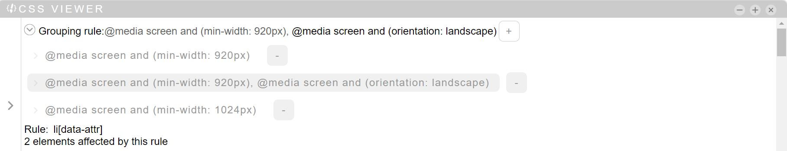

At the top of the "css viewer" panel there is a dropdown with the "conditional group rules" present in the current stylesheet. Here you can add, select and delete "group rules" (at the moment you can only enter media queries. Both media queries and support rules will appear in the list). Click in the panes in the image below for more information
By clicking in this area it will be possible to see / hide the grouping rules associated with the current stylesheet
Here you can see the selected rule (if there is one). If the rules are nested, they will be separated by a comma and the last one will be the one where the rules will be written
By clicking on this button, a form will open for the insertion of a new grouping rule
The selected rule will be displayed differently from the others
You can delete the rule by clicking on this button. All the rules contained within it will be deleted
This value is set with the highest CSS specificity rule selector associated with the element or by tagName + classes of the element. You can change the value, so you can create a new rule with the selected selector.